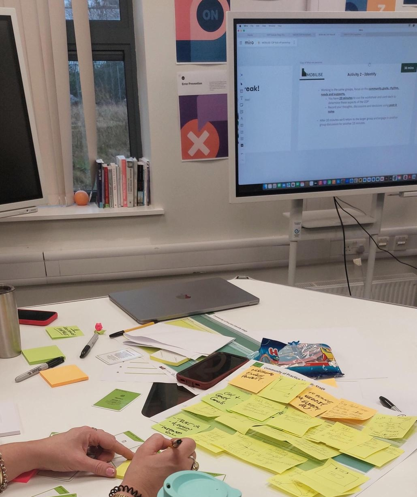

Abstract
Participatory design and community engagement are central to CSCW, yet sustaining meaningful participation with marginalised communities remains a persistent challenge, particularly in contexts shaped by institutional fragmentation, socio-technical exclusion, and structural inequalities. While Communities of Practice (CoPs) support professional knowledge exchange, they often fail to enable equitable participation for those most affected by sociotechnical systems. This workshop examines participatory infrastructuring as a core CSCW challenge, drawing on insights from the MOBILISE project, a multi-year initiative working with Irish Traveller communities to address energy, housing, and service access in mobile living contexts. Our work highlights the need to intentionally design engagement infrastructures that support sustained collaboration across community, institutional, and technical boundaries. From this, Communities of Engagement (CoEs) are emerging as a promising approach to inclusive, longterm participation. Through collaborative activities, participants will develop frameworks and research directions to advance CSCW work on participatory infrastructuring and equitable engagement.
O’Keeffe, M., Heffernan, D., Cronin, M., Murphy, T., Lally, P., Ahern, C., Ehimen, E., Galvin, M. (2026): Practices of Participation and Co-Creation in Healthcare: Lessons Learned and Advancements of Established Methodologies. Proceedings of the 24th EUSSET Conference on Computer-Supported Cooperative Work (ECSCW) – Posters and Demos, Reports of the European Society for Socially Embedded Technologies. ISSN: 2510-2591 https://doi.org/10.48340/to-be-added
Further information can be found in the full workshop description.
Call for Participation
Workshop Goals
Participatory design and community engagement are central to CSCW, yet sustaining meaningful participation with marginalised communities remains a persistent challenge. Engagement is often treated as a short-term activity, rather than an ongoing socio-technical infrastructure that requires intentional design, coordination, and maintenance. This workshop explores participatory infrastructuring as a key CSCW challenge. Drawing on insights from the MOBILISE project where we worked closely with the Irish Traveller community, we introduce Communities of Engagement (CoEs) as an approach to designing inclusive, long-term engagement across community, institutional, and technical boundaries. Through interactive and hands-on activities, participants will collaboratively develop frameworks, tools, and research directions to support equitable and sustained participation.

Workshop Focus
Topics include (but are not limited to):
- Participatory infrastructuring and sustaining engagement beyond projects
- Challenges of long-term participation with marginalised communities
- Socio-technical infrastructures that enable or constrain participation
- Power, inclusion, and decision-making in participatory design
- Designing engagement across institutional, community, and technical boundaries
- Lessons from housing, energy, healthcare, and public sector contexts
- Methods for trust-building, reciprocity, and long-term collaboration
- Comparing engagement models (e.g., Communities of Practice vs emerging approaches)
- Ethical and methodological challenges in long-term participatory research
Who Should Attend?
We welcome researchers and practitioners working in:
- CSCW and Participatory Design
- Human-Computer Interaction (HCI)
- Civic tech and social innovation
- Public sector and policy
- Community and grassroots organisations
We especially encourage participation from those:
- Working with marginalised or underrepresented communities
- Interested in long-term engagement beyond project timelines
- Exploring inclusive, low-tech, or participatory methods
Workshop Format
This is a highly interactive, half-day workshop combining discussion and hands-on activities. Participants will:
- Map real-world challenges in sustaining participation
- Identify gaps in current participatory design approaches
- Co-design Communities of Engagement (CoEs)
- Work with low-tech toolkits (cards, worksheets)
- Contribute to shared frameworks, tools, and future research directions
Submission Guidelines
To participate, please submit a short position paper (2–4 pages) outlining:
- Your research or practice context
- Your interest in participatory design / engagement
- Challenges or insights related to sustaining participation
- Relevant experience, challenges, or case examples (optional)
- What you hope to contribute or gain
To submit please send an email with your position paper (PDF) to Michelle O' Keeffe on or before 11:59PM (Irish time), Thursday April 30th, 2026.
Important Dates
- Submission deadline: April 30, 2026 @ 11:59pm, Irish time
- Notification of acceptance: May 7, 2026 @ 11:59PM, Irish time
- Camera-ready deadline: May 14, 2026 @11:59PM, Irish time
- Workshop: June 30, 2026 (morning session), Munich, Germany
Location
- ECSCW 2026, Munich, Germany
- Address: Werner-Heisenberg-Weg 39, 85579 Neubiberg, Germany
- Workshop date: Tuesday, June 30 (morning session, time TBC)
Organisers

Munster Technological University

Munster Technological University

Munster Technological University

Atlantic Technological University

Technological University Dublin

Technological University Dublin

Atlantic Technological University

Munster Technological University